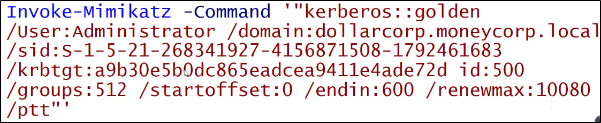

Attacco: Golden Ticket
Un Golden Ticket è firmato e cifrato dall'hash dell'account "krbtgt",
rendendo il ticket TGT valido
Essendo che la validazione dell'account utente NON è fatta dal Domain Controller,
(servizio KDC) fin quando il TGT non è più vecchio di 20 minuti,
possiamo usare perfino account cancellati o revocati!
L'hash dell'utente di krbtgt può essere usato per impersonare ogni utente,
con ogni privilegio, anche da una macchina che non è DC!
Cambiare password agli utenti non ha nessun effetto su questo tipo di attacco!
Il trucco sta nel FORGIARE TICKET TGT VALIDI e il KDC, se riesce a leggerli,
indicherà che sono validi senza controllare nessuna autenticazione utente.

Usando Mimikatz:
Eseguire Mimikatz sul DC per ottenere l'hash krbtgt, da Domain Admin:

Su qualsiasi macchina:


Con klist possiamo vedere i ticket nella cache:

Ecco un esempio di come creare una shell a partire dall'hash:

Una volta creata una sessione, possiamo caricare uno script nella sessione:

Una volta creata una sessione e caricato lo script,
possiamo eseguire Mimikatz e dumpare gli hash NTLM:


Pro tip:
I tempi del ticket rendili di default, con i valori scritti.
Così darai molto meno nell'occhio!


Per usare l'opzione DCSync per ottenere krbtgt hash,
si può eseguire questo comando con privilegi da Domain Admin:
Usare questa opzione permette di non eseguire Invoke-Mimikatz
sul DC target: quindi non fa code execution!
Ricordati di sostituire l'organizzazione al posto di ops!
Del tipo: organizzation\utente, stile Active Directory